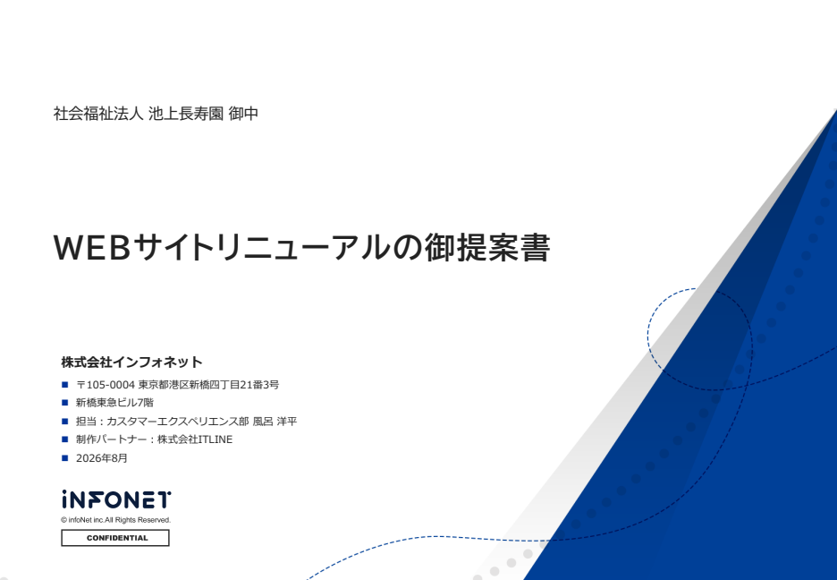
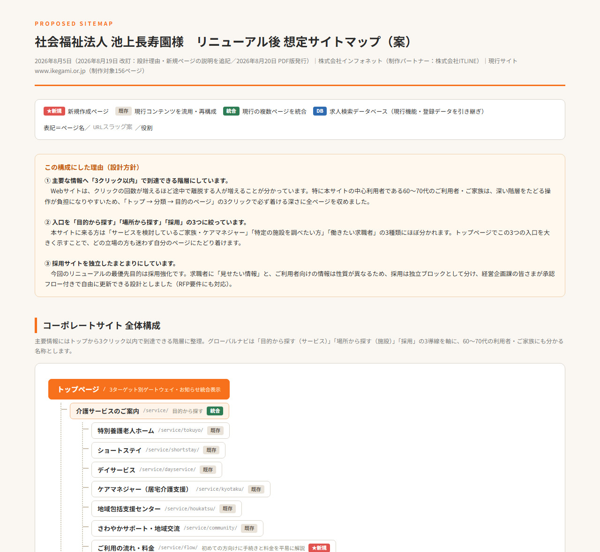

株式会社インフォネット（制作パートナー：株式会社ITLINE）｜2026年8月5日（2026年8月20日 改訂：資料構成の統合・記載内容の最終確認を反映）

リニューアルのご提案内容に集中した本編。提案サマリー／与件整理／現状分析／全体戦略／想定サイトマップ／デザイン2案／CMS・機能要件対応／運用サポート／実施体制／スケジュール／移行計画／会社概要。※金額は別紙御見積書に記載
公開後の運用サポートを1冊に統合した2部構成。第1部 概要編＝職員の皆さま向けの要点（窓口のご案内／運用範囲と保守範囲／記事更新3ステップ／Q&A）。第2部 詳細編＝ヘルプデスク（Teams・電話・メール）／説明会とPDFマニュアル／定期アップデート保守（月2回）／セキュリティ3層／更新代行／サポート項目一覧／年間カレンダー／実施体制。
進行に関する資料を1冊に統合した3部構成。第1部 進め方編＝Teams＋Webダッシュボードでの進行／全体スケジュール（ガント）／工程別の進捗表／写真撮影／金額確定までの流れ。第2部 ダッシュボード編＝画面のご紹介とご利用方法（デモページへのリンクあり）。第3部 移行計画編＝移行の方針・5ステップ・リスク対策・現行環境の調査結果（データの抽出・受け渡しは弊社と制作パートナーの間で完結し、貴法人でのご作業は発生しません）。
会社としての実力をお伝えする資料。WordPressセキュリティ対策①②／KPI達成の運用サポート／更新サポート体制／アクセス解析ツール／プロジェクト実施体制図／会社概要（ISO27001 IS 518722・ISO27017 CLOUD 765536）／採用サイト・事業会社・公共団体の構築実績。
8/20追加：貴法人よりご要望をいただいた点にお答えする追加別紙です。①ご連絡手段（メール・お電話・貴法人ご希望のツール・更新依頼ダッシュボード）の一覧と受付・ご返答の目安／②更新依頼ダッシュボードの画面と操作3ステップ／③更新代行のご依頼フロー図（ご依頼→ITLINE・インフォネットの2社窓口→ご報告→ご確認）と作業枠を超えた場合の費用（30分6,000円・税別）／④WordPressでお知らせを掲載する手順（管理画面の図解つき・全5ステップ／写真の入れ方）。
※ ダッシュボードの動く画面イメージはこちら → 進捗ダッシュボード ／ 更新依頼ダッシュボード（更新のご依頼・チャット・画像添付）（いずれもサンプルデータ・PC/スマホ対応）
※ 御見積書は別途ご提示いたします。
※ 御提案書は「ご提案内容」、追加資料は「会社としての体制・セキュリティ・実績」と役割を分けて構成しています。

コーポレートと採用サイトを分離し、主要情報へ3クリック以内。「この構成にした理由（設計方針）」と「★新規ページ9ページを追加する理由」の説明つき。末尾にページ一覧表（規模サマリー）を掲載。8/20追加：印刷・配布用のPDF版（A4横・全7ページ）をご用意しました。
| 提案依頼書のご要件 | 対応資料 |
|---|---|
| 提案資料（デザイン案2案以上） | ✔ 御提案書＋カンプA/B |
| リニューアル後の想定サイトマップ | ✔ 想定サイトマップ（HTML／PDF・全7ページ） |
| 御見積書（明細付・一式不可） | ✔ 別途ご提示（全項目明細） |
| 詳細なスケジュール表 | ✔ 御提案書 P14 |
| 体制（構築時・運用時） | ✔ 御提案書 P13＋追加資料 P11 |
| 会社概要・実績 | ✔ 御提案書 P16＋追加資料 P13〜P22 |
| ISMS等の情報セキュリティ | ✔ 御提案書 P16（ISO27001／27017 登録番号明記）＋追加資料 P3〜P4 |
| 現行環境・データ移行 | ✔ プロジェクトの進め方ガイド 第3部（移行計画編） |
| 運用体制・サポート（ヘルプデスク／研修／更新代行） | ✔ 運用サポート体制のご説明（全22ページ） |
| ご連絡手段・更新代行のご依頼方法／超過時の費用／ご自身での更新手順 | ✔ ご連絡方法と更新代行のご案内（全11ページ） |